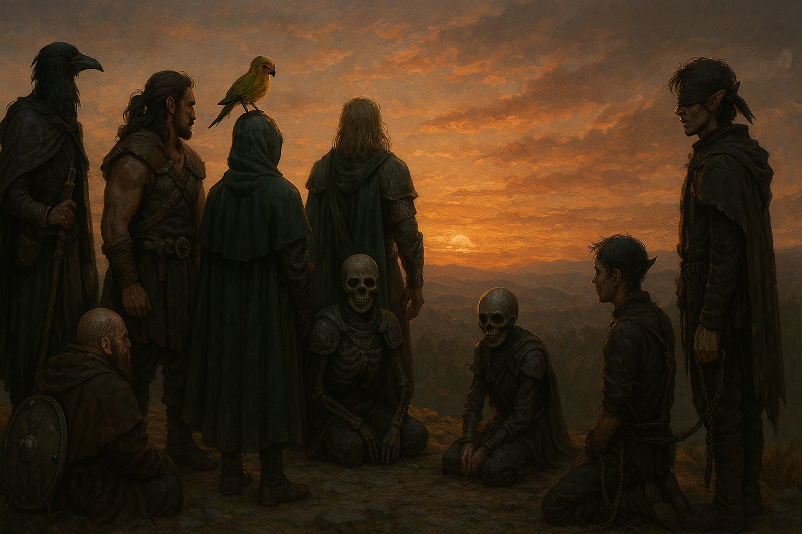

Chapter 2: Hatched Companion
Deep into Lothum


Deep into Lothum
15049.09.05
因為受到月光狩獵會的攻擊，大家整夜都睡得不太好。華生更在圖伊特守夜時，因為不放心他的狀況，幾乎都在假寐，幸好他沒有再出現任何意外。
天亮後，冒險者們準備出發繼續前進。圖伊特和華生私下討論著昨晚撿到的面具。圖伊特發現月光狩獵會成員們的面具底下，都是坑坑疤疤的皮膚，更令人驚駭的是，儘管面具有特別做出雙眼的凹槽，他們的臉上卻沒有眼睛，只有凹陷的眼窩。最終，在羅特和帕斯卡的見證下，華生戴上了純白的面具，作為嘗試。華生感到暈眩，腦中浮現聽不懂的妖精語禱詞。華生將面具取下，而此時他的臉上還沒有受到任何侵害。華生再度鼓起勇氣，戴上較為特別的那副面具。與純白的面具相似，他一樣聽見妖精語禱詞，但內容明顯與前者不同，且更為密集，華生也更難控制自己的身體。在夥伴的協助下，他終於將面具拔下，臉上也還保持著原本的樣貌。
為了確認面具的功效，冒險者們討論後，決定再拿佛拉作為試驗，誘騙他面具上有酒的香氣，讓他自己戴上純白的面具。他們希望看看未來能否讓敵人戴上面具以癱瘓敵人的行動。佛拉戴上面具後一樣看起來有些昏沈，但很快的羅特便發現佛拉將手伸向了腰後，就像要拔出武器一樣，因此他先發制人，控制住了佛拉的手。大家費了好一番功夫，合力控制住了佛拉，並將面具從他臉上強行摘除。此時癱軟的佛拉跌坐在地上，大家也看見他的臉上已經開始出現疤痕了。冒險者們決定先將幾個面具收起來，其他的則在華生用武器砸碎，卻發現沒能成功後，丟入火堆中，但似乎也沒能燒起來。
羅特提議要去裝水，邀請了圖伊特一起上路。依據他的感知，水源的距離有點長，兩人便在路上邊走邊聊。羅特對於圖伊特出發冒險前的事更加了解，也感到兩人更加親近。到了河邊裝水後，羅特藉機將衣服脫了，到河中盥洗。看著河的另一端拿出筆記本抄寫的圖伊特，羅特鼓起了勇氣，在法術的輔助下，試圖將自己和圖伊特的距離拉近。圖伊特對於羅特的意圖沒有特別的抵抗，甚至也一起下和洗澡，但兩人之間各種因緣巧合之下，終究沒能突破友情薄薄的那層膜，圖伊特沒能理解羅特對他的心意不只是冒險者之間的夥伴情誼，那份超越知己的情愫對他來說他沒能參透。
心灰意冷的羅特自己爬上岸，穿上衣服後便先走了。他感受到背包內自己負責照顧的蛋似乎正在蠕動著，因此在確認沒有被後方跟上的圖伊特看見時，拐到了樹叢內，拿出蛋看了一看。先前透明軟嫩的蛋，昨晚睡前看時已經變成有點像皮蛋那樣的彈性質地，甚至裡面出現了像是胚胎一樣的生物（在前往河邊的路上，圖伊特甚至和他心電感應，得知他已有心智）。而現在，它竟然變成了一顆堅硬且不透明的蛋，斑駁色澤的外殼已經開始有裂縫了。
找不著羅特的圖伊特透過他的第三隻眼，發現了除了羅特外還有另一個逐漸成長的靈魂。他在草叢中找到看著蛋的羅特。
「啪。」
裂痕裂開，兩人一同看向從蛋中孵出的新生命。
「哦~~~魔人爸爸、鳥爸爸！」一隻形體奇異的生物從蛋的破口冒出頭：他有著如圖伊特一樣烏鴉的頭，但下半身接的是蜘蛛的身體，包含那四雙對稱的腳。羅特睜大雙眼，雖然剛剛才經歷了和圖伊特之間的挫折，但這隻新生命的誕生，重新燃起了他的希望。除了那顆與圖伊特太過相似的頭以外。
圖伊特透過了他的眼睛，發現這隻生物的生命力無比強大，令他十分震驚。與這隻生物溝通後，羅特得知牠的形體是由羅特的內心想法塑造而成，同時牠也承載了羅特過去的記憶。於是羅特試著閉上雙眼，想像出另一個樣貌：一隻芒果色小太陽鸚鵡的上半身，與下半身和剛才相同的蜘蛛身體。圖伊特看著生物的上半身被煙霧環繞，散去時，已變成羅特想像中的模樣了。開心的羅特將牠命名為「芒果蛛」，並將牠放在自己的頭上，與圖伊特一起返回營地。
同一時間，帕斯卡看著在營火中毫無變化的面具，決定挖起附近的土，嘗試將火給澆滅。華生表示他想去附近繞一繞，思考思考。M伯爵看見帕斯卡挖了許久，進度有限，於是他掏出一顆魔法球，丟到火堆正上方，接著像是灑水器一般，水從球中快速灑出，澆滅了火堆，帕斯卡因此得到了一些喘息的機會。
突然，正在與拉里爾說話的佛拉大叫一聲，他們兩人都感受到了地震。在這一區域，地震是不太會發生的，因此對較不熟悉的佛拉而言有些震驚。還在路上的圖伊特和羅特也感受到了地震，遠處飄散著煙。羅特頂著芒果蛛，快速朝著煙的方向奔去。
佛拉領著帕斯卡、拉里爾、蓋瑞和M伯爵，四人一起往森林內快速走去，只見稍早華生放入背包的那頂較為特別的面具，掉在地上，冒著煙。M伯爵將蓋在地上的面具翻開，卻發現地上有個精緻的器械：是華生平常帶在身上的懷錶，指針還在滴滴答答的運作著。
在羅特趕到時，帕斯卡和他說明他們發現華生不見了，來到這裡只看見了這樣的景象。同時，他們也對在羅特頭上的新生命感到好奇與困惑。芒果蛛向他們自我介紹，並給了團員們各種不同的暱稱。
在夸塞魔與圖伊特趕到時，他拿起了面具檢視，發現底下有一串其他人剛剛沒有發現的普通語文字「神把我帶走了，我沒有不見」。圖伊特想和宗主溝通，確認到底是什麼神？但宗主並沒有理他。同時，圖伊特也發現了華生的懷錶似乎有個機關，但他還無法摸透機關是如何運作的。
意識到華生的消失似乎無可挽回，甚至不知道他去了哪裡，大家也只能繼續旅程了。芒果蛛似乎對這一代十分熟悉，經過他與佛拉的溝通後，決定由他帶路繼續向前走，頹喪的佛拉暫時卸下了他嚮導的職位。
中午時，大家來到了一處休息處，便開始進食。羅特和芒果蛛走進了樹林內，採摘了一些果實回來烹調。在那次昆蟲餐的經驗後，大家對羅特的廚藝有所疑慮，但這次他用果實做出了可口的果醬，夾在乾糧麵包中，再稍微烤了一下後，味道十分好吃。
下午的旅程還算順遂，只有M伯爵在中途一處樹叢中意外碰到了芒果蛛告誡要小心的植物黏液，導致暫時性的失神。大家強行將水灌入了M伯爵的口中，不久後，他便恢復意識了。
日落前，芒果蛛找了一處森林中央的小空地，建議作為紮營區，然而大家有點擔心四周可能會有月光狩獵會的襲擊。佛拉提議可以再向外走一些，於是他們走到了一處懸崖口，只有朝森林那側需要看守，雖然還是有些恐怖，但比起芒果蛛建議的位置，大家認爲懸崖邊還是比較安全一些。
接著，大家分工合作，準備紮營、生火與食材。
羅特和M伯爵一起去尋找果實，除了中午取得的果實外，他們還找到了一些較小的莓果。而在芒果蛛的說明下，羅特也找了適合作為香料的植物，帶回營地。途中，M伯爵和羅特表示了他的擔憂，隨著夥伴一直變少，下午才出了意外的M伯爵擔心會不會他是下一個。羅特雖然自己也很擔心，但還是試著安慰了M伯爵，並給他打氣。
帕斯卡和拉里爾負責紮營時，帕斯卡詢問了拉里爾是否知道他的弟弟帕拉丁當時發生了什麼事，但拉里爾認為詢問其他團員們會比較清楚。
圖伊特和佛拉一起生火，過程中，圖伊特發現佛拉其實身手十分矯健，甚至可以說比起做嚮導，他很多事情表現得更為專業。途中，圖伊特也隨時看向森林深處，檢查是否有除了羅特和M伯爵外的其他危險存在。當他使用他的眼睛時，他突然感受到了一種異樣：周圍的時間凍結，除了芒果蛛和他以外，大家都不能移動。而他聽見了芒果蛛用一種他沒有聽過的聲音，說著「這麼難能可貴的力量，要好好利用啊。」圖伊特愣了一下，當他回神，看向芒果蛛時，芒果蛛已經恢復平常天真可愛的模樣和語調了。剛才發生什麼事，圖伊特搞不清楚，但他知道這隻生命力強大的小傢伙肯定有很多他不知道的秘密。
除了莓果外，羅特還帶了兩隻野兔回來。令他們感到奇異的事，這兩隻野兔是倒在地上的屍體，而非由他們獵捕而來的。圖伊特檢查了一下，發現他們可能被下了睡眠咒，仔細檢查，他們發現野兔甚至還有脈搏。圖伊特熟練地將野兔放血、剝皮、去除內臟，羅特則拎著另一隻，手足無措，試圖用他知道的知識處了，結果處理的也很細緻，但就沒有圖伊特那麼熟練。在烹煮兔肉時，羅特也加入了剛剛取得的香料，兔肉吃起來甜甜嗆嗆的，十分好吃。
在吃飯過程中，拉里爾隨時注意著森林深處是否有危險來臨，前一晚他們正是在晚餐前後遭到月光狩獵會的攻擊，不過所幸的，他們很安全地度過了這一餐。在拉里爾的提議下，大家決定早點入眠，可以早點出發。完成守夜的排班後，羅特和帕斯卡之外的其他人便先入睡了。
夜晚，兩人有一搭沒一搭地聊著，在帕斯卡因為太累提早休息後，羅特便繼續和芒果蛛培養感情。輪到下一班圖伊特和佛拉守夜時，芒果蛛也一起跟著守夜，依牠所說，牠並不需要睡眠。過程中，圖伊特發現營地周圍似乎有個強力的結界在保護著他們，而這個結界的中心，竟是這隻芒果蛛。除此之外，圖伊特也嘗試和佛拉建立好關係，他將之前保存稀釋過的酒水倒了一點給佛拉，兩人舉杯對飲。月光之下，圖伊特好奇地詢問佛拉信奉的樹林之神涅西斯，同時試著說服佛拉可以嘗試看看月神芬尼爾。佛拉先是表示對月光狩獵會等月神信徒的不安，但在圖伊特以自身為例，說服佛拉後，他心軟了。圖伊特也表示自己發現佛拉其實除了當嚮導，還有其他表現很好的地方，不知道為何要當嚮導？佛拉表示當嚮導隨時都有生意，不論是在地人或是外地人，都有需要到較為艱辛之處的旅程，因此不會有空窗期。至於他酗酒的原因，則是因為他大多數的事情能力不好，導致他對於自己自信不足，已經超過一百歲的他長期在這樣的低潮情緒下，最終只有酒能讓他逃避一切。圖伊特的安慰與開導，佛拉聽了進去，最後瀟灑地將酒杯丟到一旁去（圖伊特悄悄讓夸塞魔將它撿了回來）。
將守夜的輪值交接給拉里爾後，圖伊特便睡去了。
15049.09.06
太陽剛升起，大家便醒了，準備在早餐過後啟程。依照芒果蛛的估算，只剩下三天的路程，他們就可以抵達母親大人的巢穴了。與原本佛拉估算的七天，他們如今只需要四、五天就能抵達，快了非常多。
然而，守夜整晚的芒果蛛，似乎也累了，在羅特的頭上睡找了。圖伊特拍了拍佛拉的肩膀，表示這段時間嚮導一職就交給他了。
走了幾個小時，佛拉建議大家先在附近休息到午餐時間再出發。然而，馬可斯和帕斯卡看見了一個人影躲在附近的草叢內。在圖伊特利用心電感應和那人溝通後，他步出草叢，是一名妖精，但並非穿著月光狩獵會的衣著，讓大家稍微放鬆了一點。但隨著妖精向大家筆直走去，冒險者們還是警戒的準備武器，以免有無法避免的戰鬥。
妖精在大家面前停下來，用著流利的普通語說著自己不是什麼威脅，對於「月光狩獵會」一詞，他也表示自己和那群人是不一樣的。他只說著這條路平常不太會有人走，冒險者們怎麼會出現在這。看著情勢越來越不緊迫，妖精竟然從腰後掏出一把匕首，拋在空中玩弄。同時，圖伊特也感應到附近似乎還有幾個靈魂正在靠近中。羅特以防萬一，決定先隱形。而此刻，他們眼前的妖精抓起匕首，用力朝羅特消失前的眉間扔去。
冒險者與夥伴們和妖精展開戰鬥，遠處逼近的兩名妖精也已出現在視野範圍內。雖然只有三名妖精，但各個都比先前遇到的月光狩獵會成員還要難纏。戰鬥中，蓋瑞和馬可斯還中了對手下的詛咒，在臉上留下印記，更麻煩的是，隨著時間，他們的身體狀況看起來越來越不妙，這甚至影響了拉里爾的判斷，顧著蓋瑞，他無法全心投入在戰鬥中。
最終，冒險者們將玩弄匕首的妖精擊暈並綑綁起來，刺死另一名妖精，但最後一名妖精則靠著法術傳送走了。看見馬可斯和蓋瑞狀況非常不好，圖伊特情急之下，發令要薩姆帶來兩名孤兒，請他的宗主一命換一命，拯救垂危的馬可斯和蓋瑞。然而，薩姆來到時，馬可斯已經沒有生命跡象了。看著被帶來的孤兒男孩癱軟在地上沒了神智，拉里爾緊緊抱住險些喪命的蓋瑞，不斷哭泣。而薩姆也將兩名孤兒（還活著的女孩和死去的男孩）傳送走了。
15049.09.05
Because they were attacked by the Moonlight Hunting Club, everyone didn't sleep well all night. Watson even stayed asleep during Tweeter's vigil because he was worried about his condition. Fortunately, he didn't have any accidents.
After dawn, the adventurers were ready to set off and move on. Tweeter and Watson privately discussed the mask they picked up last night. Tweeter discovered that the skin of the members of the Moonlight Hunting Club was covered with pits and scars under their masks. What was even more shocking was that, although the masks had special grooves for making eyes, there were no eyes on their faces, only sunken eye sockets. Finally, under the witness of Lott and Pascal, Watson put on a pure white mask as an attempt. Watson felt dizzy, and incomprehensible fairy language prayers came to his mind. Watson took off the mask, but at this time his face had not been harmed in any way. Watson mustered up the courage again and put on a more special mask. Similar to the pure white mask, he also heard the elf prayer, but the content was obviously different from the former and more dense. It was also more difficult for Watson to control his body. With the help of his partners, he finally took off the mask, and his face still kept its original appearance.
In order to confirm the efficacy of the mask, after discussion, the adventurers decided to use Phola as a test, tricking him into smelling the aroma of wine on the mask and letting him wear a pure white mask himself. They hope to see if, in the future, they can make enemies wear masks to paralyze their movements. Phola still looked a little dazed after putting on the mask, but soon Lott found that Phola stretched his hand behind his waist, as if he was about to pull out a weapon, so he took preemptive action and controlled Phola's hand. After a lot of effort, everyone worked together to control Phola and forcibly remove the mask from his face. At this time, the limp Phola fell to the ground, and everyone saw that scars had begun to appear on his face. The adventurers decided to put away a few masks first, and after Watson smashed the others with weapons, but found that they failed, they threw them into the fire, but they did not seem to burn.
Lott proposed to fill the water tank and invited Tweeter to go on the road together. According to his perception, the distance to the water source was a bit long, so the two of them walked and chatted on the road. Lott has a better understanding of what happened before Tweeter set off on his adventure, and the two of them feel closer. After arriving at the river to fill the water, Lott took the opportunity to take off his clothes and wash himself in the river. Looking at the Tweeter copied from the notebook on the other side of the river, Lott plucked up the courage, and with the help of magic, tried to close the distance between himself and Tweeter. Tweeter had no particular resistance to Lott's intentions, and even went to bed and bathed together. However, due to various coincidences between the two, they were unable to break through the thin layer of friendship. Tweeter failed to understand that Lott's feelings for him were not just a partnership between adventurers, but a feeling that transcended confidants. He could not understand it.
The frustrated Lott climbed ashore by himself, put on his clothes and left first. He felt that the egg he was responsible for taking care of in his backpack seemed to be squirming, so after making sure that he was not seen by Tweeter who was following behind him, he turned into the bushes and took out the egg to take a look. The previously transparent and soft egg had become a bit elastic like a preserved egg when I looked at it last night, and even an embryo-like creature appeared inside (on the way to the river, Tweeter even telepathically communicated with him and learned that he had a mind). But now, it has turned into a hard and opaque egg, and the mottled shell has begun to have cracks.
Tweeter, who could not find Lott, discovered through his third eye that there was another soul growing up besides Lott. He found Lott in the grass looking at the egg.
"Bang."
The crack opened, and the two of them looked at the new life hatched from the egg.
"Oh~~~Daddy Demon, Daddy Bird!" A strange-looking creature emerged from the hole in the egg: he had the head of a crow like Tweeter, but the lower body was connected to the body of a spider, including the four pairs of symmetrical legs. Lott opened his eyes wide. Although he had just experienced a setback with Tweeter, the birth of this new life rekindled his hope. Except for the head that is too similar to Tweeter.
Tweeter Through his eyes, he found that the vitality of this creature was extremely powerful, which shocked him. After communicating with this creature, Lott learned that its form was shaped by Lott's inner thoughts, and that it also carried the memories of Lott's past. So Lott tried to close his eyes and imagine another appearance: the upper body of a small Mango colored sun parrot, and the lower body of the same spider body as before. Tweeter watched as the upper body of the creature was surrounded by smoke. When it dissipated, it had turned into what Lott had imagined. The happy Lott named it "Mango Spider", put it on his head, and returned to the camp with Tweeter.
At the same time, Pascal looked at the unchanged mask in the campfire and decided to dig up the nearby soil to try to put out the fire. Watson said he wanted to go around the area and think about it. Count M saw that Pascal had been digging for a long time and the progress was limited, so he took out a magic ball and threw it directly above the fire. Then, like a sprinkler, water quickly poured out from the ball and extinguished the fire. Pascal therefore got some breathing space.
Suddenly, Phola, who was talking to Ra'Leer, screamed and both of them felt an earthquake. Earthquakes are unlikely to occur in this area, so it was a bit of a shock to the less familiar Phola. Tweeter and Lott, who were still on the road, also felt the earthquake, with smoke floating in the distance. Lott, carrying the Mango spider, quickly ran towards the direction of the smoke.
Phola led Pascal, Ra’Leer, Gary and Earl M, and the four of them walked quickly into the forest. They saw the rather special mask that Watson had put in his backpack earlier, falling to the ground and smoking. Count M opened the mask covering the ground, only to find a delicate instrument on the ground: it was the pocket watch that Watson usually carried, and the hands were still ticking.
When Lott arrived, Pascal explained to him that they found that Watson was missing. They only saw this scene when they came here. At the same time, they are also curious and confused about the new life on Lott's head. Mango Spider introduced himself to them and gave the group members various nicknames.
When Quasaimon and Tweeter arrived, he picked up the mask and inspected it, and found a string of words in Mandarin underneath that no one else had just discovered: "God took me away, and I did not disappear." Tweeter I want to communicate with the sect leader and confirm what kind of god he is? But the sect leader ignored him. At the same time, Tweeter also discovered that Watson's pocket watch seemed to have a mechanism, but he could not figure out how the mechanism worked.
Realizing that Watson’s disappearance seemed irreversible, and we didn’t even know where he had gone, everyone could only continue their journey. Spider Mango seems to be very familiar with this generation. After communicating with Phola, he decided to let him lead the way and continue moving forward. The depressed Phola temporarily resigned from his position as guide.
At noon, everyone came to a resting place and started eating. Lott and Mango spiders walked into the woods, picked some fruits and came back to cook them. After the insect meal experience, everyone had doubts about Lott's cooking skills, but this time he made delicious jam from the fruits, which was sandwiched in dry food bread and slightly toasted. It tasted very delicious.
The journey in the afternoon went smoothly, except that Count M accidentally encountered the plant slime that the Mango spider warned him to be careful about in a bush on the way, causing him to temporarily lose consciousness. Everyone forced water into Count M's mouth, and soon he regained consciousness.
Before sunset, Mango Spider found a small clearing in the middle of the forest and suggested it as a camping area. However, everyone was a little worried that there might be attacks from the Moonlight Hunting Club nearby. Phola suggested that they could go further out, so they came to a cliff. Only the side facing the forest needed to be guarded. Although it was still a bit scary, everyone thought that the cliff was safer than the location suggested by Mango Spider.
Then, everyone divided the work and worked together to prepare camp, light fires and ingredients.
Lott went looking for fruits with Count M. In addition to the fruits obtained at noon, they also found some smaller berries. Under the instructions of Mango Spider, Lott also found plants suitable for use as spices and brought them back to the camp. On the way, Earl M and Lott expressed his concerns. As the number of companions kept decreasing, Earl M, who had an accident in the afternoon, was worried that he might be next. Lott Although he was also worried, he still tried to comfort Earl M and cheer him up.
While Pascal and Ra'Leer were in charge of setting up camp, Pascal asked Ra'Leer if he knew what happened to his brother Paladin, but Ra'Leer thought it would be clearer to ask the other group members.
Tweeter and Phola were making a fire together. During the process, Tweeter discovered that Phola was actually very skilled. It can even be said that he was more professional in many things than being a guide. On the way, Tweeter also looked deep into the forest at any time to check if there were any other dangers besides Lott and Earl M. When he used his eyes, he suddenly felt something strange: the time around him was frozen, and no one could move except Mango Spider and him. And he heard Mango spider say in a voice that he had never heard before, "Such a valuable power, you must make good use of it." Tweeter was stunned for a moment. When he came back to his senses and looked at Mango spider, Mango spider had returned to its usual innocent and cute appearance and tone. Tweeter couldn't figure out what happened just now, but he knew that this powerful little guy must have many secrets that he didn't know.
In addition to berries, Lott also brought back two hares. What surprised them was that the two hares were corpses lying on the ground, not hunted by them. Tweeter checked and discovered that they might have been under a sleeping spell, and on closer inspection, they discovered that the hare even had a pulse. Tweeter skillfully bled, skinned, and removed the internal organs of the hare, while Lott was holding the other one, at a loss, trying to use his knowledge to deal with it. The result was that he handled it very carefully, but not as skillfully as Tweeter. When cooking rabbit meat, Lott also added the spices he just obtained. The rabbit meat tastes sweet and choking, very delicious.
During the meal, Ra’Leer kept an eye on whether there was any danger coming deep in the forest. The night before, they were attacked by the Moonlight Hunting Group around dinner, but fortunately, they passed the meal safely. At Ra’Leer’s suggestion, everyone decided to go to bed early so they could start early. After completing the schedule for the vigil, everyone except Lott and Pascal went to sleep first.
At night, the two chatted together. After Pascal went to bed early because he was too tired, Lott continued to cultivate a relationship with Mango spider. When it was the turn of the next group of Tweeter and Phola to keep vigil, Mango spider also followed the vigil. According to it, it did not need sleep. During the process, Tweeter discovered that there seemed to be a powerful barrier around the camp protecting them, and the center of this barrier was actually the Mango spider. In addition, Tweeter also tried to establish a good relationship with Phola. He poured a little of the previously diluted wine to Phola, and the two drank together. Under the moonlight, Tweeter asked curiously about Nesis, the god of the woods that Phola believed in, and at the same time tried to convince Phola that he could try to see the moon god Phynoir. Phola first expressed his uneasiness towards Moon God believers such as the Moonlight Hunting Society, but after Tweeter used himself as an example to convince Phola, he relented. Tweeter also said that he found that Phola actually performed well in other ways besides being a guide. I don’t know why he wanted to be a guide? Phola said that there is always business as a guide, whether locals or foreigners, they all need to travel to more difficult places, so there will be no window period. As for the reason for his alcoholism, it was because he was not capable of most things, which led to his lack of confidence in himself. He was over a hundred years old and had been in such a low mood for a long time. In the end, only alcohol could allow him to escape everything. Tweeter's comfort and enlightenment, Phola listened to it, and finally threw the wine glass aside coolly (Tweeter quietly asked Quasai Demon to pick it back up).
After handing over the vigil to Ra’Leer, Tweeter fell asleep.
15049.09.06
As soon as the sun rose, everyone woke up and prepared to set off after breakfast. According to Mango spider's estimation, there are only three days left before they can reach The Mother's nest. Compared with the seven days originally estimated at Phola, it now only takes them four or five days to arrive, which is much faster.
However, Mango spider, which had been vigiling all night, seemed to be tired and fell asleep on Lott's head. Tweeter patted Phola on the shoulder and said that the role of guide would be handed over to him during this period.
After walking for several hours, Phola suggested that everyone rest nearby until lunch time before setting off. However, Marcus and Pascal saw a figure hiding in the nearby grass. After Tweeter used telepathy to communicate with the man, he stepped out of the grass. He was a goblin, but he was not wearing the clothes of the Moonlight Hunting Club, which made everyone relax a little. But as the goblin walked straight towards everyone, the adventurers were still alert to prepare weapons in case there was an inevitable battle.
The goblin stopped in front of everyone and said in fluent Mandarin that he was not a threat. Regarding the term "Moonlight Hunting Club", he also said that he was different from that group of people. He only said that this road was rarely used by people, so how could the adventurers appear here. Seeing that the situation was becoming less and less urgent, the goblin actually took out a dagger from his waist and threw it in the air to play with. At the same time, Tweeter also sensed that there seemed to be several souls approaching nearby. Lott decided to become invisible first just in case. At this moment, the goblin in front of them grabbed the dagger and threw it hard towards Lott's eyebrow before disappearing.
The adventurer and his friends started fighting the goblins, and two goblins approaching from a distance also appeared in the field of vision. Although there were only three goblins, each of them was more difficult to deal with than the members of the Moonlight Hunting Club they had encountered before. During the battle, Gary and Marcus were also cursed by their opponents, leaving marks on their faces. What was even more troublesome was that their physical condition seemed to be getting worse and worse over time, which even affected Ra’Leer’s judgment. Because of Gary, he could not devote himself fully to the battle.
In the end, the adventurers knocked out and tied up the goblin playing with the dagger, and stabbed another goblin to death, but the last goblin teleported away with magic. Seeing that Marcus and Gary were in very bad condition, Tweeter was in desperation and ordered Sham to bring two orphans and asked his master to exchange one life for another to save the dying Marcus and Gary. However, when Sham arrived, Marcus showed no signs of life. Seeing the orphan boy who was brought limp and unconscious on the ground, Ra’Leer hugged Gary who was almost dead and kept crying. And Sham also teleported away two orphans (the living girl and the dead boy).